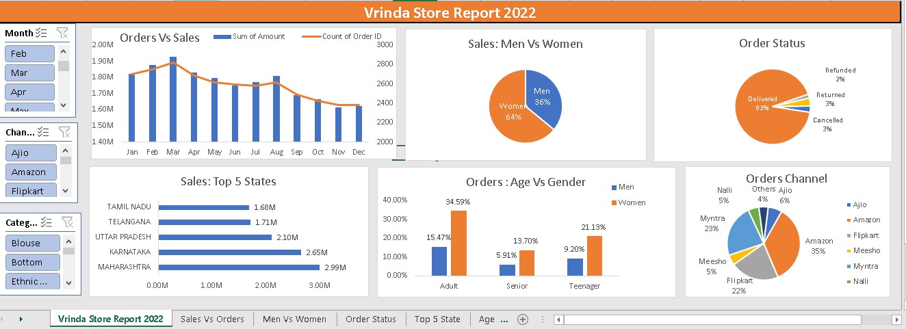

Graduated in Bachelor of Technology (B.Tech)
I Skilled in Python, Django Framework, SQL, Power BI, Excel
• Languages: Python, MySQL
• Analytical Tools: Power BI, Advanced Excel
•Database: MySQL, Microsoft SQL Server
•Frameworks: Django
•Developer Tools: Jupyter Notebook, Visual Studio Code
•Familiar With: Data Analysis, Data-driven decision making, Pandas, Numpy, Excel Charts, MySQL, SQLite, Bootstrap

•Diverse datasets: The projects covers different types of data, including financial, social, and behavioral data.
•Rigorous analysis: I used SQL to perform detailed and thorough analyses of the data, ensuring that the insights generated are accurate and reliable.
•Meaningful insights:The goal of the projects is to generate insights that are valuable and relevant to the stakeholders involved.

•Python programming: Pandas was used to manipulate and analyze the data.
•Data visualization: The insights are presented in a clear and visually appealing manner using data visualization library Matplotlib in Python.

•Data analysis:The projects cover different types of data and use cases, such as sales analysis, customer segmentation, and financial analysis.
•DAX functions: DAX functions are used to perform advanced calculations and create custom measures for the reports and dashboards.
•Stakeholder engagement: The reports and dashboards are designed to provide actionable insights and engage stakeholders, such as business leaders, decision-makers, and customers.

• Developed the application using Django framework.
• It has CRUD operations for Users and Books.
• Users can rent book from the library.

• Developed the web scraper using BeautifulSoup library.
• It scraps a product page and gathers data like product name, prices and update that in csv file.
• It tracks the price extracted and when the price of the product drops considerably, you get a notification.

• Set of real world data science tasks completed using the Python Pandas library.
• Used Python Pandas & Python Matplotlib to analyze and answer business questions about 3 years worth of sales data. The data contains thousands of store purchases broken down by month, product type, cost, purchase address, etc.

• Vrinda Store Wants to Create a Sales Report for 2022. So, that Vrinda can understand their customers and grow more sales in 2023.
• Generated Pivot chart for the data and generated meaningful insights using sales data of Vrinda store

• Developed the application using Django and Bootstrap.
• It has CRUD operations for Employees.
• Users can filter employee details by employee name, department and role.

• Developed the application using Django framework and Python programming language.
• It gets the user details and generate pdf resume based on the profile of user.
•This dynamic web application allows users to create professional and visually appealing resumes in minutes.